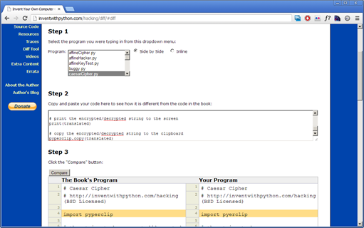
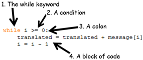

Topics Covered In This Chapter:
· The len() function
· while loops
· The Boolean data type
· Comparison operators
· Conditions
· Blocks
“Every man is surrounded by a neighborhood of voluntary spies.”
Jane Austen
The reverse cipher encrypts a message by printing it in reverse order. So “Hello world!” encrypts to “!dlrow olleH”. To decrypt, you simply reverse the reversed message to get the original message. The encryption and decryption steps are the same.
The reverse cipher is a very weak cipher. Just by looking at its ciphertext you can figure out it is just in reverse order. .syas ti tahw tuo erugif llits ylbaborp nac uoy ,detpyrcne si siht hguoht neve ,elpmaxe roF
But the code for the reverse cipher program is easy to explain, so we’ll use it as our first encryption program.
In IDLE, click on File ► New Window to create a new file editor window. Type in the following code, save it as reverseCipher.py, and press F5 to run it: (Remember, don’t type in the line numbers at the beginning of each line.)
Source code for reverseCipher.py
1. # Reverse Cipher
2. # http://inventwithpython.com/hacking (BSD Licensed)
3.
4. message = 'Three can keep a secret, if two of them are dead.'
5. translated = ''
6.
7. i = len(message) - 1
8. while i >= 0:
9. translated = translated + message[i]
10. i = i - 1
11.
12. print(translated)
When you run this program the output will look like this:
.daed era meht fo owt fi ,terces a peek nac eerhT
To decrypt this message, copy the “.daed era meht fo owt fi ,terces a peek nac eerhT” text to the clipboard (see http://invpy.com/copypaste for instructions on how to copy and paste text) and paste it as the string value stored in message on line 4. Be sure to have the single quotes at the beginning and end of the string. The new line 4 will look like this (with the change in bold):
reverseCipher.py
4. message = '.daed era meht fo owt fi ,terces a peek nac eerhT'
Now when you run the reverseCipher.py program, the output will decrypt to the original message:
Three can keep a secret, if two of them are dead.
Even though you could copy and paste or download this code from this book’s website, it is very helpful to type in this program yourself. This will give you a better idea of what code is in this program. However, you might make some mistakes while typing it in yourself.
To compare the code you typed to the code that is in this book, you can use the book’s website’s online diff tool. Copy the text of your code and open http://invpy.com/hackingdiff in your web browser. Paste your code into the text field on this web page, and then click the Compare button. The diff tool will show any differences between your code and the code in this book. This is an easy way to find typos that are causing errors.

Figure 5-1. The online diff tool at http://invpy/hackingdiff
reverseCipher.py
1. # Reverse Cipher
2. # http://inventwithpython.com/hacking (BSD Licensed)
The first two lines are comments explaining what the program is, and also the website where you can find it. The “BSD Licensed” part means that this program is free to copy and modify by anyone as long as the program retains the credits to the original author (in this case, the book’s website at http://inventwithpython.com/hacking) (The full text of the Berkeley Software Distribution license can be seen at http://invpy.com/bsd) I like to have this info in the file so if it gets copied around the Internet, a person who downloads it will always know where to look for the original source. They’ll also know this program is open source software and free to distribute to others.
reverseCipher.py
4. message = 'Three can keep a secret, if two of them are dead.'
Line 4 stores the string we want to encrypt in a variable named message. Whenever we want to encrypt or decrypt a new string we will just type the string directly into the code on line 4. (The programs in this book don’t call input(), instead the user will type in the message into the source code. You can just change the source directly before running the program again to encrypt different strings.)
reverseCipher.py
5. translated = ''
The translated variable is where our program will store the reversed string. At the start of the program, it will contain the blank string. (Remember that the blank string is two single quote characters, not one double quote character.)
reverseCipher.py
7. i = len(message) - 1
Line 6 is just a blank line, and Python will simply skip it. The next line of code is on line 7. This code is just an assignment statement that stores a value in a variable named i. The expression that is evaluated and stored in the variable is len(message) - 1.
The first part of this expression is len(message). This is a function call to the len() function. The len() function accepts a string value argument (just like the print() function does) and returns an integer value of how many characters are in the string (that is, the length of the string). In this case, we pass the message variable to len(), so len(message) will tell us how many characters are in the string value stored in message.
Let’s experiment in the interactive shell with the len() function. Type the following into the interactive shell:
>>> len('Hello')
5
>>> len('')
0
>>> spam = 'Al'
>>> len(spam)
2
>>> len('Hello' + ' ' + 'world!')
12
>>>
From the return value of len(), we know the string 'Hello' has five characters in it and the blank string has zero characters in it. If we store the string 'Al' in a variable and then pass the variable to len(), the function will return 2. If we pass the expression 'Hello' + ' ' + 'world!' to the len() function, it returns 12. This is because 'Hello' + ' ' + 'world!' will evaluate to the string value 'Hello world!', which has twelve characters in it. (The space and the exclamation point count as characters.)
Line 7 finds the number of characters in message, subtracts one, and then stores this number in the i variable. This will be the index of the last character in the message string.
reverseCipher.py
8. while i >= 0:
This is a new type of Python instruction called a while loop or while statement. A while loop is made up of four parts:
1. The while keyword.
2. An expression (also called a condition) that evaluates to the Boolean values True or False. (Booleans are explained next in this chapter.)
3. A : colon.
4. A block (explained later) of indented code that comes after it, which is what lines 9 and 10 are. (Blocks are explained later in this chapter.)

Figure 5-2. The parts of a while loop statement.
To understand while loops, we will first need to learn about Booleans, comparison operators, and blocks.
The Boolean data type has only two values: True or False. These values are case-sensitive (you always need to capitalize the T and F, and leave the rest in lowercase). They are not string values. You do not put a ' quote character around True or False. We will use Boolean values (also called bools) with comparison operators to form conditions. (Explained later after Comparison Operators.)
Like a value of any other data type, bools can be stored in variables. Type this into the interactive shell:
>>> spam = True
>>> spam
True
>>> spam = False
>>> spam
False
>>>
In line 8 of our program, look at the expression after the while keyword:
reverseCipher.py
8. while i >= 0:
The expression that follows the while keyword (the i >= 0 part) contains two values (the value in the variable i, and the integer value 0) connected by an operator (the >= sign, called the “greater than or equal” operator). The >= operator is called a comparison operator.
The comparison operator is used to compare two values and evaluate to a True or False Boolean value. Table 5-1 lists the comparison operators.
Table 5-1. Comparison operators.
|
Operator Sign |
Operator Name |
|
< |
Less than |
|
> |
Greater than |
|
<= |
Less than or equal to |
|
>= |
Greater than or equal to |
|
== |
Equal to |
|
!= |
Not equal to |
Enter the following expressions in the interactive shell to see the Boolean value they evaluate to:
>>> 0 < 6
True
>>> 6 < 0
False
>>> 50 < 10.5
False
>>> 10.5 < 11.3
True
>>> 10 < 10
False
The expression 0 < 6 returns the Boolean value True because the number 0 is less than the number 6. But because 6 is not less than 0, the expression 6 < 0 evaluates to False. 50 is not less than 10.5, so 50 < 10.5 is False. 10.5 is less than 11.3, so 10 < 11.3 evaluates to True.
Look again at 10 < 10. It is False because the number 10 is not smaller than the number 10. They are exactly the same size. If Alice was the same height as Bob, you wouldn’t say that Alice is shorter than Bob. That statement would be false.
Try typing in some expressions using the other comparison operators:
>>> 10 <= 20
True
>>> 10 <= 10
True
>>> 10 >= 20
False
>>> 20 >= 20
True
>>>
Remember that for the “less than or equal to” and “greater than or equal to” operators, the < or > sign always comes before the = sign.
Type in some expressions that use the == (equal to) and != (not equal to) operators into the shell to see how they work:
>>> 10 == 10
True
>>> 10 == 11
False
>>> 11 == 10
False
>>> 10 != 10
False
>>> 10 != 11
True
>>> 'Hello' == 'Hello'
True
>>> 'Hello' == 'Good bye'
False
>>> 'Hello' == 'HELLO'
False
>>> 'Good bye' != 'Hello'
True
Notice the difference between the assignment operator (=) and the “equal to” comparison operator (==). The equal (=) sign is used to assign a value to a variable, and the equal to (==) sign is used in expressions to see whether two values are the same. If you’re asking Python if two things are equal, use ==. If you are telling Python to set a variable to a value, use =.
String and integer values will always be not-equal to each other. For example, try entering the following into the interactive shell:
>>> 42 == 'Hello'
False
>>> 42 == '42'
False
>>> 10 == 10.0
True
Just remember that every expression with comparison operators always evaluates to the value True or the value False.
A condition is another name for an expression when it is used in a while or if statement. (if statements aren’t used in the reverse cipher program, but will be covered in the next chapter.) Conditions usually have comparison operators, but conditions are still just expressions.
A block is one or more lines of code grouped together with the same minimum amount of indentation (that is, the number of spaces in front of the line). You can tell where a block begins and ends by looking at the line’s indentation.
A block begins when a line is indented by four spaces. Any following line that is also indented by at least four spaces is part of the block. When a line is indented with another four spaces (for a total of eight spaces in front of the line), a new block begins inside the block. A block ends when there is a line of code with the same indentation before the block started.
Let’s look at some imaginary code (it doesn’t matter what the code is, we are only paying attention to the indentation of each line). We will replace the indenting spaces with black squares to make them easier to count:
1. codecodecodecodecodecodecode # zero spaces of indentation
2. ▪▪▪▪codecodecodecodecodecodecodecodecode # four spaces of indentation
3. ▪▪▪▪codecodecodecodecodecodecode # four spaces of indentation
4. ▪▪▪▪▪▪▪▪codecodecodecodecodecodecodecodecode # eight spaces of indentation
5. ▪▪▪▪codecodecodecodecode # four spaces of indentation
6.
7. ▪▪▪▪codecodecodecodecodecode # four spaces of indentation
8. codecodecodecodecodecodecodecodecodecodecode # zero spaces of indentation
You can see that line 1 has no indentation, that is, there are zero spaces in front of the line of code. But line 2 has four spaces of indentation. Because this is a larger amount of indentation than the previous line, we know a new block has begun. Line 3 also has four spaces of indentation, so we know the block continues on line 3.
Line 4 has even more indentation (8 spaces), so a new block has begun. This block is inside the other blocks. In Python, you can have blocks-within-blocks.
On line 5, the amount of indentation has decreased to 4, so we know that the block on the previous line has ended. Line 4 is the only line in that block. Since line 5 has the same amount of indentation as the block from line 3, we know that the block has continue on to line 5.
Line 6 is a blank line, so we just skip it.
Line 7 has four spaces on indentation, so we know that the block that started on line 2 has continued to line 7.
Line 8 has zero spaces of indentation, which is less indentation than the previous line. This decrease in indentation tells us that the previous block has ended.
There are two blocks in the above make-believe code. The first block goes from line 2 to line 7. The second block is just made up of line 4 (and is inside the other block).
(As a side note, it doesn’t always have to be four spaces. The blocks can use any number of spaces, but the convention is to use four spaces.)
reverseCipher.py
8. while i >= 0:
9. translated = translated + message[i]
10. i = i - 1
11.
12. print(translated)
Let’s look at the while statement on line 8 again. What a while statement tells Python to do is first check to see what the condition (which on line 8 is i >= 0) evaluates to. If the condition evaluates to True, then the program execution enters the block following the while statement. From looking at the indentation, this block is made up of lines 9 and 10.
If the while statement’s condition evaluates to False, then the program execution will skip the code inside the following block and jump down to the first line after the block (which is line 12).
If the condition was True, the program execution starts at the top of the block and executes each line in turn going down. When it reaches the bottom of the block, the program execution jumps back to the while statement on line 8 and checks the condition again. If it is still True, the execution jumps into the block again. If it is False, the program execution will skip past it.
You can think of the while statement while i >= 0: as meaning, “while the variable i is greater than or equal to zero, keep executing the code in the following block”.
Remember on line 7 that the i variable is first set to the length of the message minus one, and the while loop on line 8 will keep executing the lines inside the following block until the condition i >= 0 is False.
reverseCipher.py
7. i = len(message) - 1
8. while i >= 0:
9. translated = translated + message[i]
10. i = i – 1
11.
12. print(translated)
There are two lines inside the while statement’s block, line 9 and line 10.
Line 9 is an assignment statement that stores a value in the translated variable. The value that is stored is the current value of translated concatenated with the character at the index i in message. In this way, the string value stored in translated “grows” until it becomes the fully encrypted string.
Line 10 is an assignment statement also. It takes the current integer value in i and subtracts one from it (this is called decrementing the variable), and then stores this value as the new value of i.
The next line is line 12, but since this line has less indentation, Python knows that the while statement’s block has ended. So rather than go on to line 12, the program execution jumps back to line 8 where the while loop’s condition is checked again. If the condition is True, then the lines inside the block (lines 9 and 10) are executed again. This keeps happening until the condition is False (that is, when i is less than 0), in which case the program execution goes to the first line after the block (line 12).
Let’s think about the behavior of this loop. The variable i starts off with the value of the last index of message and the translated variable starts off as the blank string. Then inside the loop, the value of message[i] (which is the last character in the message string, since i will have the value of the last index) is added to the end of the translated string.
Then the value in i is decremented (that is, reduced) by 1. This means that message[i] will be the second to last character. So while i as an index keeps moving from the back of the string in message to the front, the string message[i] is added to the end of translated. This is what causes translated to hold the reverse of the string in the message. When i is finally set to -1, then the while loop’s condition will be False and the execution jumps to line 12.
reverseCipher.py
12. print(translated)
At the end of our program on line 12, we print out the contents of the translated variable (that is, the string '.daed era meht fo owt fi ,terces a peek nac eerhT') to the screen. This will show the user what the reversed string looks like.
If you are still having trouble understanding how the code in the while loop reverses the string, try adding this new line inside the while loop:
reverseCipher.py
8. while i >= 0:
9. translated = translated + message[i]
10. print(i, message[i], translated)
11. i = i - 1
12.
13. print(translated)
This will print out the three expressions i, message[i], and translated each time the execution goes through the loop (that is, on each iteration of the loop). The commas tell the print() function that we are printing three separate things, so the function will add a space in between them. Now when you run the program, you can see how the translated variable “grows”. The output will look like this:
48 . .
47 d .d
46 a .da
45 e .dae
44 d .daed
43 .daed
42 e .daed e
41 r .daed er
40 a .daed era
39 .daed era
38 m .daed era m
37 e .daed era me
36 h .daed era meh
35 t .daed era meht
34 .daed era meht
33 f .daed era meht f
32 o .daed era meht fo
31 .daed era meht fo
30 o .daed era meht fo o
29 w .daed era meht fo ow
28 t .daed era meht fo owt
27 .daed era meht fo owt
26 f .daed era meht fo owt f
25 i .daed era meht fo owt fi
24 .daed era meht fo owt fi
23 , .daed era meht fo owt fi ,
22 t .daed era meht fo owt fi ,t
21 e .daed era meht fo owt fi ,te
20 r .daed era meht fo owt fi ,ter
19 c .daed era meht fo owt fi ,terc
18 e .daed era meht fo owt fi ,terce
17 s .daed era meht fo owt fi ,terces
16 .daed era meht fo owt fi ,terces
15 a .daed era meht fo owt fi ,terces a
14 .daed era meht fo owt fi ,terces a
13 p .daed era meht fo owt fi ,terces a p
12 e .daed era meht fo owt fi ,terces a pe
11 e .daed era meht fo owt fi ,terces a pee
10 k .daed era meht fo owt fi ,terces a peek
9 .daed era meht fo owt fi ,terces a peek
8 n .daed era meht fo owt fi ,terces a peek n
7 a .daed era meht fo owt fi ,terces a peek na
6 c .daed era meht fo owt fi ,terces a peek nac
5 .daed era meht fo owt fi ,terces a peek nac
4 e .daed era meht fo owt fi ,terces a peek nac e
3 e .daed era meht fo owt fi ,terces a peek nac ee
2 r .daed era meht fo owt fi ,terces a peek nac eer
1 h .daed era meht fo owt fi ,terces a peek nac eerh
0 T .daed era meht fo owt fi ,terces a peek nac eerhT
.daed era meht fo owt fi ,terces a peek nac eerhT
The first line, which shows “48 . .”, is showing what the expressions i, message[i], and translated evaluate to after the string message[i] has been added to the end of translated but before i is decremented. You can see that the first time the program execution goes through the loop, i is set to 48, and so message[i] (that is, message[48]) is the string '.'. The translated variable started as a blank string, but when message[i] was added to the end of it on line 9, it became the string value '.'.
On the next iteration of the loop, the print() call displays “47 . .d”. You can see that i has been decremented from 48 to 47, and so now message[i] is message[47], which is the 'd' string. (That’s the second “d” in “dead”.) This 'd' gets added to the end of translated so that translated is now set to '.d'.
Now you can see how the translated variable’s string is slowly “grown” from a blank string to the reverse of the string stored in message.
The previous explanations have gone through what each line does, but let’s go step by step through the program the same way the Python interpreter does. The interpreter starts at the very top, executes the first line, then moves down a line to execute the next instruction. The blank lines and comments are skipped. The while loop will cause the program execution will loop back to the start of the loop after it finishes.
Here is a brief explanation of each line of code in the same order that the Python interpreter executes it. Follow along with to see how the execution moves down the lines of the program, but sometimes jumps back to a previous line.
reverseCipher.py
1. # Reverse Cipher
2. # http://inventwithpython.com/hacking (BSD Licensed)
3.
4. message = 'Three can keep a secret, if two of them are dead.'
5. translated = ''
6.
7. i = len(message) - 1
8. while i >= 0:
9. translated = translated + message[i]
10. i = i - 1
11.
12. print(translated)
|
Step 1 |
Line 1 |
This is a comment, so the Python interpreter skips it. |
|
Step 2 |
Line 2 |
This is a comment, and skipped. |
|
Step 3 |
Line 4 |
The string value 'Three can keep a secret, if two of them are dead.' is stored in the message variable. |
|
Step 4 |
Line 5 |
The blank string '' is stored in the translated variable. |
|
Step 5 |
Line 7 |
len(message) - 1 evaluates to 48. The integer 48 is stored in the i variable. |
|
Step 6 |
Line 8 |
The while loop’s condition i >= 0 evaluates to True. Since the condition is True, the program execution moves inside the following block. |
|
Step 7 |
Line 9 |
translated + message[i] to '.'. The string value '.' is stored in the translated variable. |
|
Step 8 |
Line 10 |
i - 1 evaluates to 47. The integer 47 is stored in the i variable. |
|
Step 9 |
Line 8 |
When the program execution reaches the end of the block, the execution moves back to the while statement and rechecks the condition. i >= 0 evaluates to True, the program execution moves inside the block again. |
|
Step 10 |
Line 9 |
translated + message[i] evaluates '.d'. The string value '.d' is stored in the translated variable. |
|
Step 11 |
Line 10 |
i - 1 evaluates to 46. The integer 46 is stored in the i variable. |
|
Step 12 |
Line 8 |
The while statement rechecks the condition. Since i >= 0 evaluates to True, the program execution will move inside the block again. |
|
Step 13 to Step 149 |
|
...The lines of the code continue to loop. We fast-forward to when i is set to 0 and translated is set to ' .daed era meht fo owt fi ,terces a peek nac eerh'... |
|
Step 150 |
Line 8 |
The while loop’s condition is checked, and 0 >= 0 evaluates to True. |
|
Step 151 |
Line 9 |
translated + message[i] evaluates to '.daed era meht fo owt fi ,terces a peek nac eerhT'. This string is stored in the translated variable. |
|
Step 152 |
Line 10 |
i - 1 evaluates to 0 - 1, which evaluates to -1. -1 is stored in the i variable. |
|
Step 153 |
Line 8 |
The while loop’s condition is i >= 0, which evaluates to -1 >= 0, which evaluates to False. Because the condition is now False, the program execution skips the following block of code and goes to line 12. |
|
Step 154 |
Line 12 |
translated evaluates to the string value '.daed era meht fo owt fi ,terces a peek nac eerhT'. The print() function is called and this string is passed, making it appear on the screen. |
|
|
|
There are no more lines after line 12, so the program terminates. |
The programs in this book are all designed so that the strings that are being encrypted or decrypted are typed directly into the source code. You could also modify the assignment statements so that they call the input() function. You can pass a string to the input() function to appear as a prompt for the user to type in the string to encrypt. For example, if you change line 4 in reverseCipher.py to this:
reverseCipher.py
4. message = input('Enter message: ')
Then when you run the program, it will print the prompt to the screen and wait for the user to type in the message and press Enter. The message that the user types in will be the string value that is stored in the message variable:
Enter message: Hello world!
!dlrow olleH
Practice exercises can be found at http://invpy.com/hackingpractice5A.
Now that we have learned how to deal with text, we can start making programs that the user can run and interact with. This is important because text is the main way the user and the computer will communicate with each other.
Strings are just a different data type that we can use in our programs. We can use the + operator to concatenate strings together. We can use indexing and slicing to create a new string from part of a different string. The len() function takes a string argument and returns an integer of how many characters are in the string.
The Boolean data type has only two values: True and False. Comparison operators ==, !=, <, >, <=, and >= can compare two values and evaluate to a Boolean value.
Conditions are expression that are used in several different kinds of statements. A while loop statement keeps executing the lines inside the block that follows it as long as its condition evaluates to True. A block is made up of lines with the same level of indentation, including any blocks inside of them.
A common practice in programs is to start a variable with a blank string, and then concatenate characters to it until it “grows” into the final desired string.